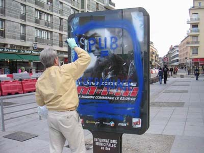

| |
Site dédié à la publication d'informations communiquées par le Collectif des déboulonneurs. En aucun cas ce site n'appelle à des actions illégales. | |
 |
||
|
Accueil du site > Rouen > ROUEN - action du 29 avril 06, 6° barbouillage au grand jour - La presse (...)
24 activistes se retrouvent à 14h59, Place de la Pucelle (zone piétonne). Des personnes du groupe s’inquiètent de la présence d’un fourgon de la police et d’une voiture de la même police nationale stationnées à 40 mètres du groupe. Est-ce pour nous ? Moment de flottement. Le barbouilleur décide cependant d’aller barbouiller comme convenu 4 dispositifs publicitaires (obstacles urbains appelés "sucettes JCDecaux), situés à la sortie de la station de métro "Théâtre des arts", en zone piétonne. On avait souhaité être au minimum 30 activistes pour ce 6° barbouillage à Rouen, que 19 passeront à l’ action. Le barbouilleur a pris seul l’initiative de conduire l’action, principalement parce que deux journalistes de la presse écrite étaient là depuis 14h59 et qu’il ne voulait pas les décevoir. Aucun journaliste de la presse écrite ne s’était déplacé depuis le barbouillage du 23 décembre où nous avions été 50 activistes. Il ne fallait pas les décevoir, a estimé le barbouilleur. Le temps n’était pas à la discussion sur la présence policière... qui en fin de compte n’était pas pour nous, mais il est vrai que personne ne pouvait alors le savoir à 14h59. 15h15 : le groupe arrive au théâtre des arts. Le barbouilleur inscrit au pochoir sur les 4 obstacles urbains : PUB = MATRAQUAGE ( sur trois lignes). Onze activistes s’assoient par terre, avec dans le dos une page A4 (collée avec du ruban adhésif), sur lequel est inscrit "Pub = matraquage". Très bon visuel. La circulation des piétons n’est nullement entravée. 6 personnes distribuent un tract aux passants, lequel explique cette action non-violente de désobéissance civile et son mobile. Réactions plus que sympathiques des nombreux passants, sauf l’un d’entre eux qui s’insurge calmement contre le fait que ces inscriptions salissent ce lieu tout neuf mis en zone piétonne (un habitant du quartier). 15h40 : une voiture de police vient à passer par hasard (c’est confirmé) et les policiers voient alors le barbouilleur en train de fignoler sa décoration à la bombe de peinture sur un obstacle urbain dont l’affiche vantait des sous-vêtements féminins. Les policiers ne sont jamais intéressés aux manifestants assis. Le barbouilleur explique à la police l’action et donne avec plaisir sa carte d’identité aux gens en uniforme. Ils radiophonent au commissariat, laissant même le barbouilleur retourner au milieu de la manif qui en profite pour prendre la parole en direction des passants. 15h50 : le barbouilleur est embarqué dans la voiture de la police. La manif est dissoute, chacun se disperse. 17h : le barbouilleur quitte l’Hôtel de police après avoir signé sa déposition, et peut témoigner que les policiers ont été toujours fermes mais courtois à son égard. Que va faire JCDecaux ? On ne sait ! À noter que le barbouilleur a déjà reçu un devis de 160 € pour un barbouillage d’un 3x4 mètre commis le 24 novembre à Rouen, auquel il a été répondu par le biais d’une déposition faite au commissariat de police que le barbouilleur " s’engage à ne jamais payer cette somme qui est relative à un acte politique, non-violent, de désobéissance civile, commis volontairement dans le cadre des activités antipublicitaires du Collectif des déboulonneurs de Rouen". 
Conclusions 1) Le groupe des Déboulonneurs de Rouen a besoin de mieux préparer ses actions à venir et de mieux accueillir ceux qui viennent pour la première fois. 2) Les pochoirs ont été confectionnés à partir de radiographies. C’est un excellent support pour ce genre de sport, mais le barbouilleur n’a pas envie de recommencer ce genre d’exercice, car le résultat n’est pas assez lisible de loin. Une prochaine fois, pour ce genre d’obstacles urbains, il vaut mieux tracer le graffiti directement à la bombe de peinture, sans pochoir, mais il faudrait alors qu’aucun mot ne dépasse 5 lettres. ("Matraquage" en comporte 10, c’est trop long et impossible à inscrire lisiblement à la bombe). 3) VICTOIRE ! Le journal du dimanche de Rouen, "Liberté Dimanche", publie, ce dimanche 30 avril, un excellent et long article avec grande photo. "Paris-Normandie devrait suivre dans son édition du 1° mai. D’autres photos dans notre galerie |
|
Site utilisant SPIP - Hébergement Ouvaton
|